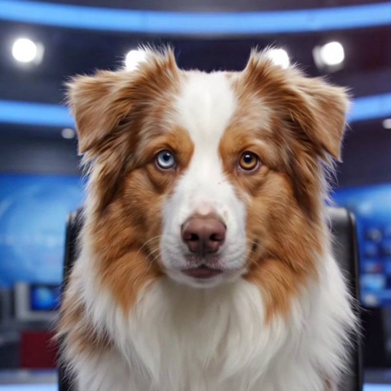
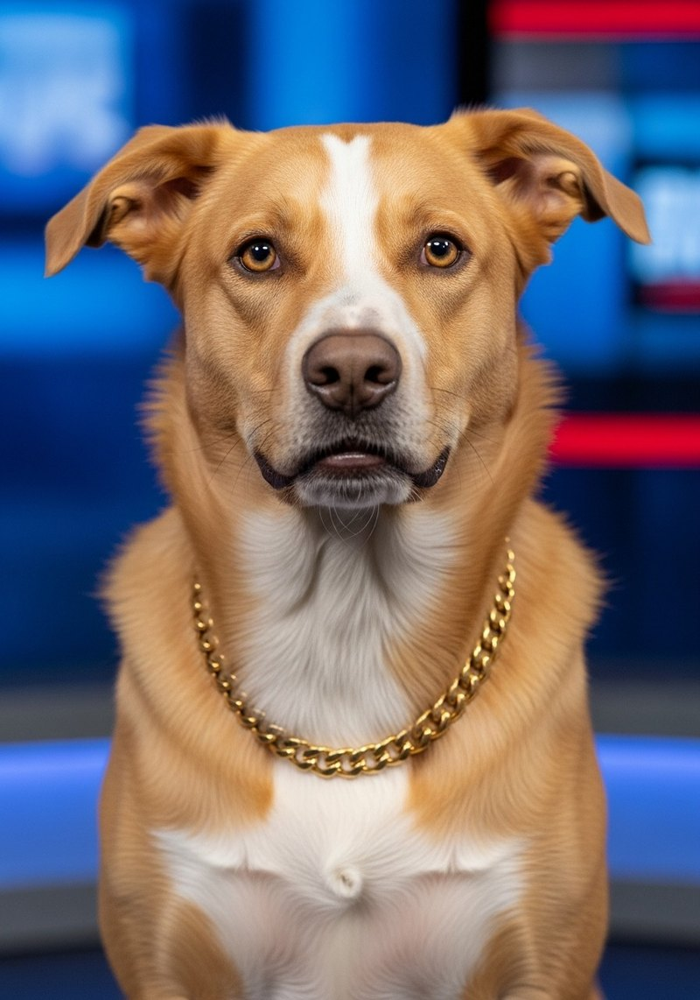
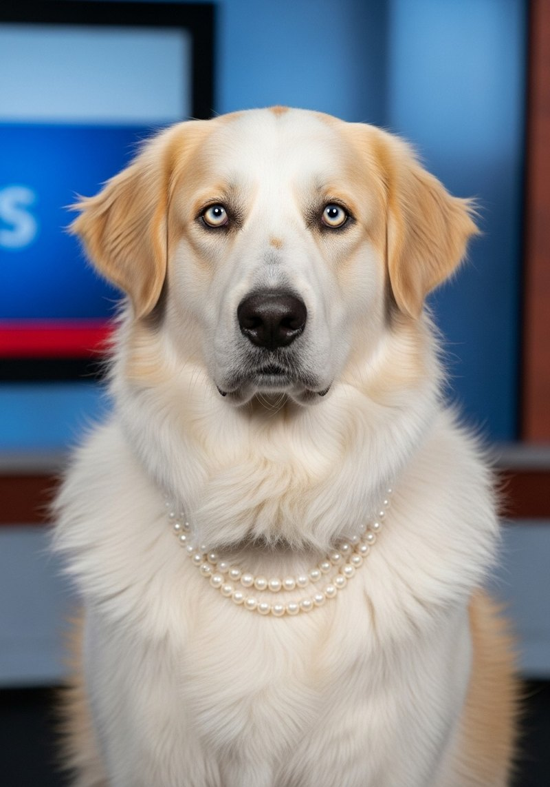

DNN: a four-anchor newsroom of dogs delivering the day's biggest real stock story with complete seriousness. Weekdays on TikTok as @dnn96866.
AI-GENERATED COMEDY · REAL HEADLINES · NOT FINANCIAL ADVICE. WE ARE DOGS. 🐕Real headline, verified before air. The anchor is the only thing we made up.
Spain wins 1–0 — and the real scoreboard says $13 billion. The floor bought a scarf.
AI-GENERATED CONTENT NOT FINANCIAL ADVICEChips fell 13% in two days but are up 82% this year. Wall Street can't decide. Basil called it weeks ago; nobody listens.
AI-GENERATED CONTENT NOT FINANCIAL ADVICETokyo −4%, Taiwan −6.5%, TSMC −7.3% a day after the $100B pledge. The squirrel threat index: CODE RED.
AI-GENERATED CONTENT NOT FINANCIAL ADVICEProfit up 77%, another $100B for Arizona — and the market sold the news. The desk goes long-format.
AI-GENERATED CONTENT NOT FINANCIAL ADVICEPayPal jumps 20% on a reported takeover. The floor is doing math.
AI-GENERATED CONTENT NOT FINANCIAL ADVICES&P and Nasdaq hit fresh records. Peaches remains unbothered.
AI-GENERATED CONTENT NOT FINANCIAL ADVICEJPMorgan posts a record quarter; the rookie posts her first broadcast.
AI-GENERATED CONTENT NOT FINANCIAL ADVICEIBM plunges 20%+. Basil sold everything yesterday. Of course.
AI-GENERATED CONTENT NOT FINANCIAL ADVICEChip giant SK Hynix jumps 13% in its US market debut. Basil had money in that. NEXT question.
AI-GENERATED CONTENT NOT FINANCIAL ADVICE
Basil is the founding anchor of the Dog News Network — DNN —, a daily comedy series in which the day's biggest real stock story is delivered in seconds by a dog who takes it all very, very seriously. He is a red merle Australian Shepherd with one blue eye, one brown eye, and the gravitas of a man who has seen four market cycles and trusts none of them.
Basil is an AI-generated character: his video, voice, and delivery are produced with generative tools, and every episode is labeled as AI-generated content. The headlines he reads are not generated — every story is a real, verified headline from established financial news organizations. The delivery is sensational; the facts never are.
Basil's on-air disclosures of his personal portfolio — squirrel futures, treat reserves, the kibble sector — are entirely fictional instruments. He reports the news; he does not recommend. Nothing on DNN is financial advice. He is a dog.
"I'm Basil. Be on the lookout for squirrels. That's the news."
Abba is DNN's co-anchor and its first hire. She is a red goldendoodle puppy on her first desk job, and she would like you to know the desk is taller than she is. She shares the anchor chair with Basil, bringing unfiltered rookie enthusiasm to stories the senior anchor would prefer to suffer through quietly.
Abba is an AI-generated character: her video, voice, and delivery are produced with generative tools, and every episode is labeled as AI-generated content. Like everything on DNN, the headlines she reads are real and verified — only the puppy is invented.
She reports the news at approximately 1.2× the speed anyone asked for. She does not give financial advice. She is a puppy.
"I'm Abba. Be on the lookout for squirrels. That's the news." — and unlike Basil, she means it as a genuine safety announcement.

Cleo is DNN's senior markets correspondent — the desk's street-smart money reporter. She is a six-year-old mixed breed (Australian Shepherd with a dash of pit bull, a little cattle dog, and a suspicious amount of Great Pyrenees), golden blonde with a white blaze from her snout to the back of her head, hazel eyes, a small overbite, and an 18-karat Italian gold Cuban-link chain she has never once explained.
Cleo files the "what Wall Street is actually doing" segments. Six years in the game — she has seen every cycle, sold at every bottom, and reports it all with the confidence of someone whose chain is fully paid off.
Cleo is an AI-generated character: her video, voice, and delivery are produced with generative tools, and every episode is labeled as AI-generated content. The stories she files are real and verified. Her portfolio is entirely fictional instruments — and no, the chain is not collateral. Nothing on DNN is financial advice. She is a dog.
"Word on the floor is… I'm Cleo. Be on the lookout for squirrels. That's the news."

Peaches is DNN's Long View correspondent — the calm one. She is a Great Pyrenees mix (about half, and you can tell), medium-sized with a plush snowy-white coat streaked with gold, pale halo-light eyes, and a double strand of pearls she wears the way some dogs wear composure: effortlessly.
Peaches files the big-picture segments. When the market panics, she has seen worse; when it euphores, she has seen that too. Her beat is history and perspective — what today's number looks like from ten years away — delivered at the pace of a dog who has never once rushed anywhere and has never once been late.
Peaches is an AI-generated character: her video, voice, and delivery are produced with generative tools, and every episode is labeled as AI-generated content. The history she cites is real and verified. Nothing on DNN is financial advice. She is a dog. A very calm dog.
"Take a breath. I'm Peaches. Be on the lookout for squirrels. That's the news."